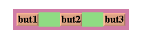

 |
Space-fillingFor simplicity, the packing strategy was described as if the submorphs to be packed were all rigid. In order to support "stretchy" layouts, morphs can be designated as space-filling. (Note: The source code uses the older term, flexible.) When there is extra space, a space-filling morph expands to fill this space. If there is no extra space, a space-filling morph shrinks to its minimum size. When there are several space-filling morphs in a single row or column, any extra space is divided evenly among them.Space-filling morphs can be used to control the placement of submorphs within the primary dimension when a row or column is stretched. For example, suppose one wanted a row with three buttons, one at the left end, one at the right end, and one in the middle. This can be accomplished by inserting space-filling morphs between the buttons:
[See images] When the row is stretched, the extra space is divided evenly between the two spacers, button2 stays in the center, and button3 stays at the far right. By making the color of the spacers match that of the underlying row, they become effectively invisible. This is a common technique.
|